Листы как есть
Не картинки — листы, по которым строят
Шесть листов из альбомов без ретуши. Откройте любой: увеличьте штамп и цепочки размеров — и попробуйте поставить на нём метку с правкой.
Десять минут рассказа и план — больше ничего не нужно. Планы, развёртки каждой стены, электрика, сантехника, мебель и визуализации в одном альбоме по ГОСТ. Квартира — до 48 часов, дом — до 72.
Нажимаете микрофон и рассказываете, как живёте. Подсказки тем на экране, поля заполняются сами. План и фото, ♥ и ✕ в галерее референсов — и всё уходит одним архивом в WhatsApp.
Обмер, демонтаж, мебель, свет и щит, вода и канализация, отопление, потолки, плитка, встроенная мебель, лестницы, ведомости и смета. В альбомах на сайте — от 64 до 155 листов A3.
Движок GOST-DRAFT прогоняет выпуск по более чем 900 правилам — у каждого пункт ГОСТ, СП или практика бюро. Проём не влез в стену — выпуск останавливается.
Метка прямо на чертеже, замечание голосом или текстом. В PDF альбома на каждой странице — кнопка «Правка к этому листу». Финал собирается заново, вместе со сметой.
Никаких созвонов «для знакомства» и анкет на вечер. Говорите вы, чертит движок, решения смотрит автор.
Около 10 минут: как живёте, что не нравится, какой бюджет. Плюс план — фото, PDF или листок от руки. Получение подтвердим в течение дня.
Открыть бриф →Квартира — до 48 часов, дом — до 72. Два PDF: альбом для заказчика, чтобы принять решение, и полный — для бригады.
Пример альбома →Отмечаете место прямо на листе и говорите или пишете. Из PDF — кнопкой «Правка к этому листу» на каждой странице.
Попробовать на листе →Альбом пересобирается целиком: размеры, ведомости и смета меняются вместе с чертежом, а не правятся вручную по одному листу.
Подробнее о процессе →Хороший дизайнер начинает с разговора, а не с таблицы. Бриф устроен так же: вы говорите как другу, а экран подсказывает, о чём ещё стоит сказать.
Не десять красивых картинок, а рабочая документация: каждый раздел выпускает свой специалист движка — архитектор, электрик, сантехник, плиточник, мебельщик, сметчик.
Обмерный, демонтаж и монтаж перегородок, двери, расстановка мебели с размерами каждого предмета.
Каждая стена каждого помещения: высоты, привязки, ниши. Узлы — рядом со своей развёрткой.
Розетки и выводы, свет, выключатели, однолинейная схема щита, трассы, слаботочные сети.
Выводы сантехники с высотами, разводка воды и канализации, вентиляция, отопление.
Раскладка плитки, полы и их конструкция, ведомость отделки, колерная карта, спецификация материалов.
Встроенные шкафы и системы хранения, развёртка и монтажная схема кухни, ведомость фурнитуры.
План потолков со светом, разрезы и узлы. В домах — лестница отдельным листом.
Визуализации по стенам помещений, ведомость объёмов работ, спецификация и ориентировочная смета.
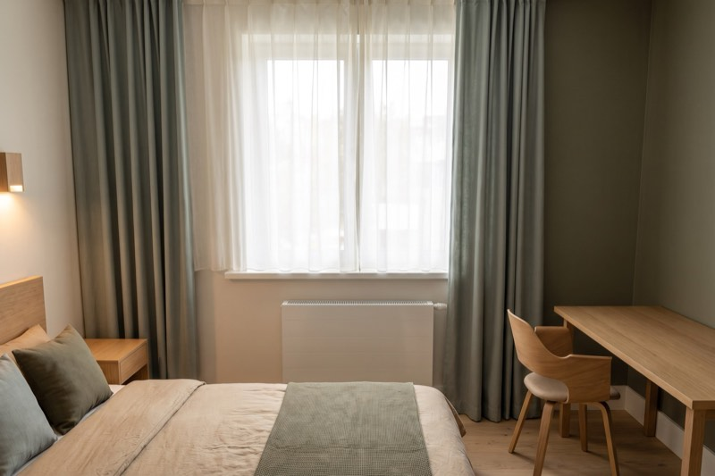
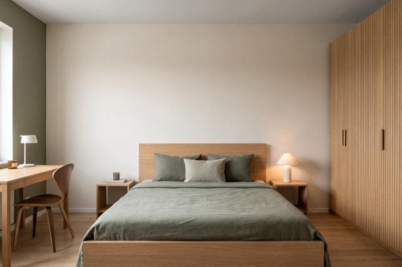
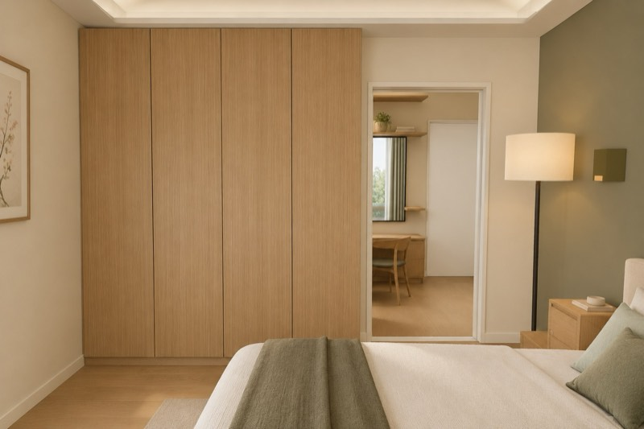
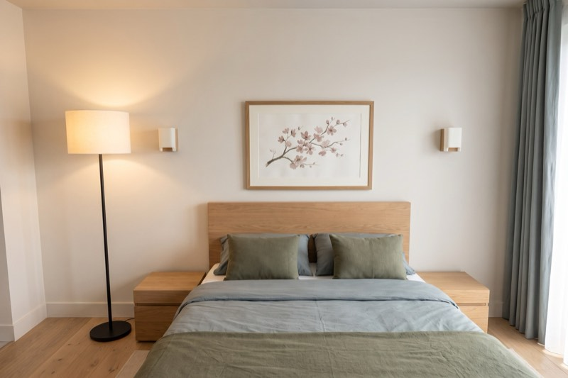
Визуализация на каждую стену: спальня квартиры 56 м² в стиле джапанди — стены А, Б, В, Г. Та же мебель и тот же свет, что на чертежах.
Тот же проект в подаче студии: визуализации стоят перед развёртками своих помещений, у мебели на плане — выноски с размерами. Чтобы спокойно принять решение.
Вся рабочая документация с проверкой по нормам: инженерия, ведомости, узлы, спецификации и смета. Это отдают бригаде.
Квартиры, ретро, модерн, дома в два этажа. Каждый альбом выложен целиком: страница проекта, оба PDF и все листы, к которым можно надиктовать правки.
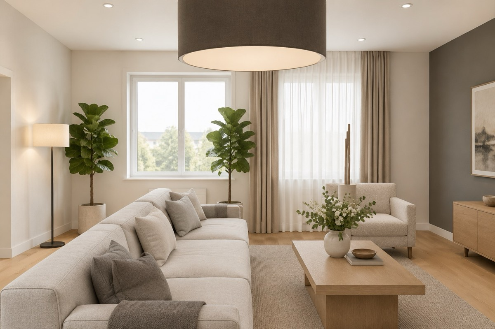
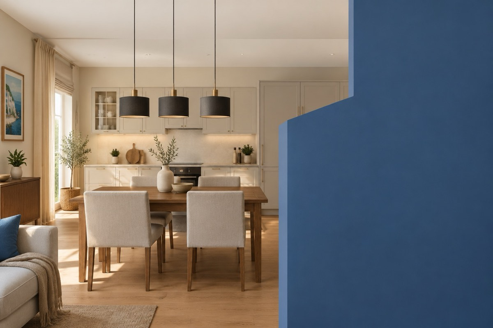
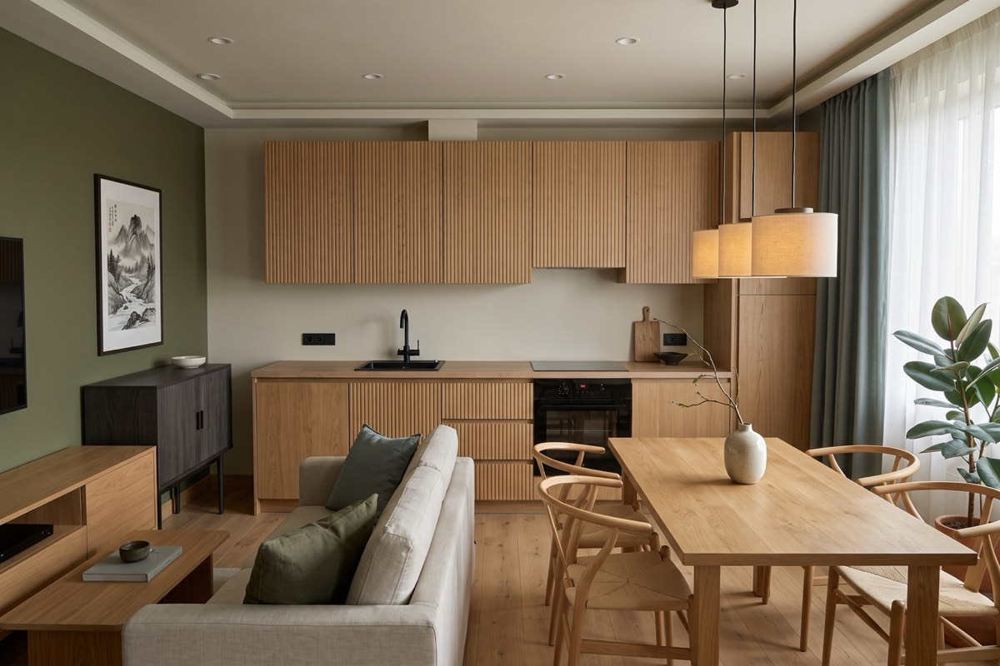
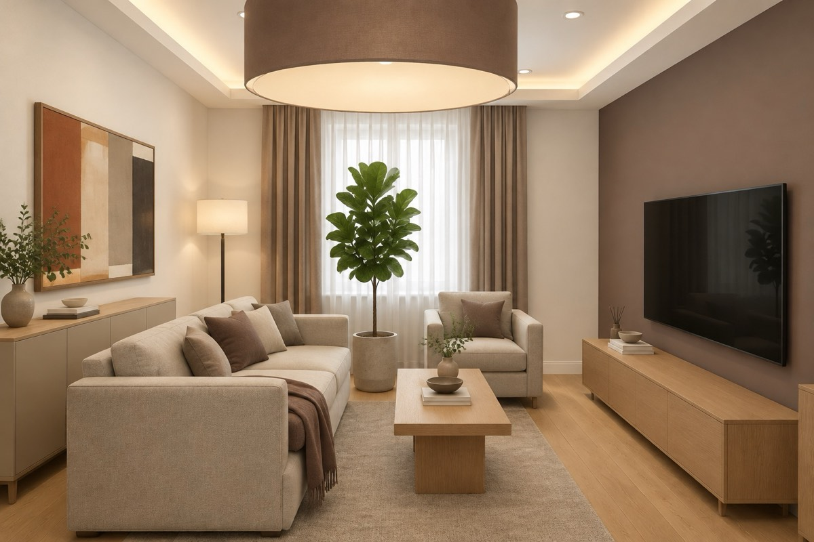
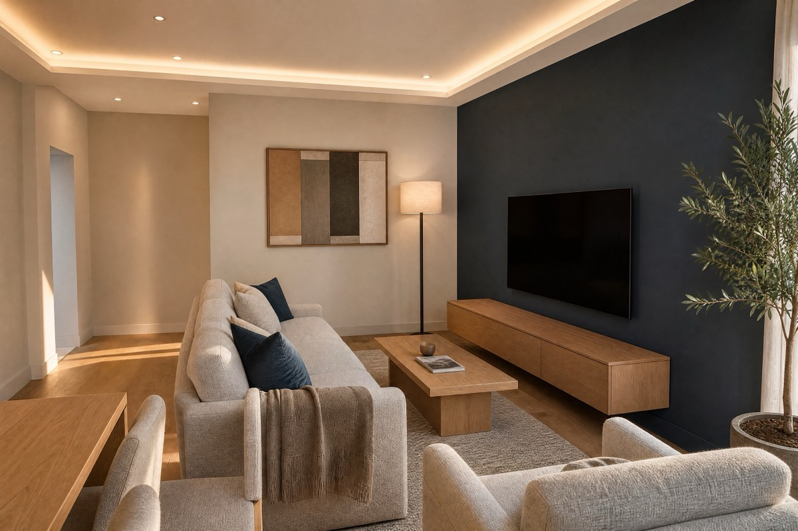
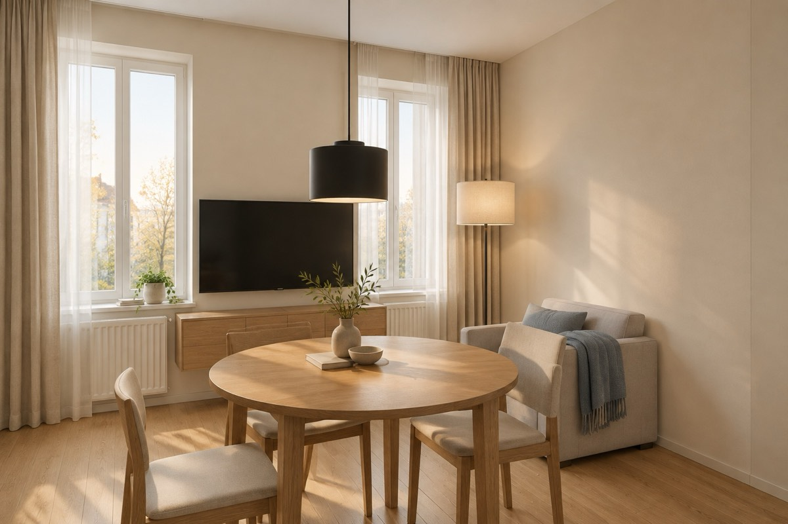
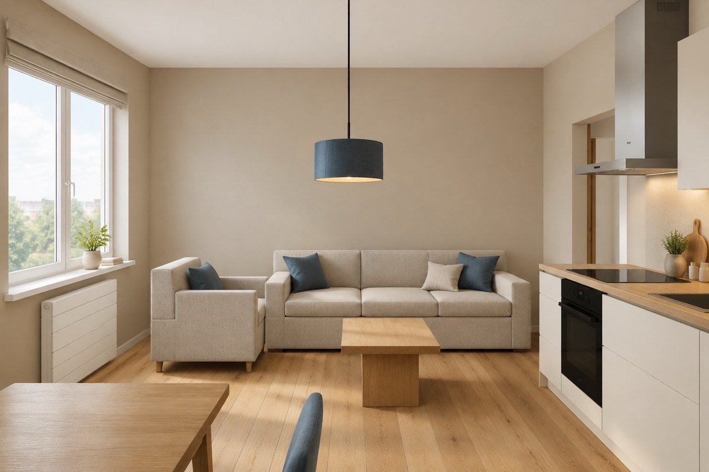
Шесть листов из альбомов без ретуши. Откройте любой: увеличьте штамп и цепочки размеров — и попробуйте поставить на нём метку с правкой.
 1
2
1
2
Объяснять словами «левее того шкафа, который у окна» больше не нужно. Отмечаете место прямо на чертеже — и говорите.
Так выглядит типичный путь заказчика — и так его проходит клиент студии.
Альбомы собирает движок GOST-DRAFT. Объект описан данными один раз, а проверка проходит по правилам, у каждого из которых записан источник.
Лист нельзя «подрисовать»: он строится из геометрии объекта в миллиметрах. Поменялась планировка — пересобрался весь альбом и смета вместе с ним.
Более 900 правил проверки — у каждого пункт ГОСТ, СП или практика бюро. Нарушение выводится с адресом: лист, элемент, что не так.
Проём не помещается в стену, подпись наехала на штамп — выпуск останавливается. Замечания по каждому альбому открыто показаны на его странице.
Честно о границах. Альбомы на сайте предварительные: до контрольного обмера по ним не строят — задание на обмер лежит в самом альбоме, после него альбом перевыпускается. Подписей нормоконтролёра на листах нет: за проверяющих мы не расписываемся.
Движок уже выпускает полный альбом — и мы доводим его на реальных квартирах и домах. Пока идёт тест, оплаты нет: вы получаете проект целиком и говорите, что доработать.
Ваши замечания идут прямо в доработку движка — это и есть цель теста.
О старте платного периода предупредим заранее.
Студия в открытом тестировании: движок, который собирает альбомы, отлаживается на реальных квартирах и домах. Вы получаете проект целиком, мы — ваши правки и честный отзыв. Без предоплаты и договора на этом этапе, альбом остаётся у вас в любом случае.
Нет. Лист не берётся из библиотеки и не рисуется от руки: он строится из данных вашего объекта в миллиметрах — стены, проёмы, мебель, инженерные точки. Поменялась стена — пересобирается весь альбом и смета. На сайте девять проектов — девять разных планировок, от квартиры 56 м² до дома с мансардой. Решения смотрит автор, Кырлан Александр.
Альбом оформлен как рабочая документация по СПДС: штамп, масштаб, цепочки размеров, отметки, ведомости, узлы — бригада читает его как обычный проект. Честно: до контрольного обмера альбом предварительный. Задание на обмер лежит в самом альбоме; после обмера размеры уточняются и альбом перевыпускается.
Проект квартиры — до 48 часов от получения брифа с планом, дома — до 72. Чертежи, ведомости и смету собирает движок GOST-DRAFT и сам проверяет выпуск по правилам с пунктами ГОСТ и СП. Автор смотрит решения и отвечает на вопросы.
Рассказать о квартире голосом — около 10 минут — и приложить план: от застройщика, БТИ, PDF или листок от руки. Фото помещений и отметки в галерее референсов помогут, но не обязательны. Получение брифа подтвердим в течение дня.
Откройте лист на сайте, поставьте метку прямо на чертеже и надиктуйте или напишите замечание. В PDF альбома на каждой странице есть кнопка «Правка к этому листу». Правки уходят одним сообщением, финальный альбом пересобирается целиком — вместе со сметой.
Чертит движок, а решения смотрит и отвечает за них человек
Кырлан Александр
дизайнер-архитектор · автор проектов LINEA
Познакомиться со студией →Бриф голосом — около 10 минут. Получение подтвердим в течение дня, проект квартиры — до 48 часов от брифа с планом, дома — до 72. Понравится — работаем дальше, нет — альбом всё равно остаётся у вас. Предоплаты нет.
Или напрямую: дизайнер-архитектор Кырлан Александр, +7 925 733-86-40, optteem@mail.ru.